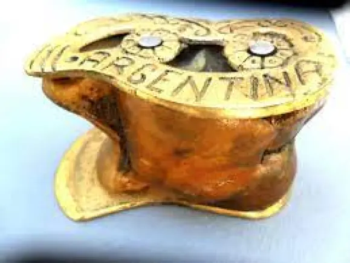

Les tabes no defineixen un únic joc. Són una base material comuna per a pràctiques d’habilitat, jerarquia simbòlica, atzar i variacions locals molt riques.
Destresa
Cinc tabes
És la variant més coneguda d’habilitat. Es juga amb quatre tabes a terra i una mare que es llança enlaire mentre es fan accions successives.
Primeres: recollir d’una en una
Segones: recollir de dues en dues
Terceres: una i després dues, o una figura equivalent
Quarta: recollir-les totes de cop
Figures
Pont, volta, cistella i dors
Quan la seqüència bàsica ja es domina, entren les figures especials. Són les que donen més ritme i espectacularitat al joc.
El pont: fer passar les tabes per sota dels dits
La volta: girar-les o canviar-ne la posició
La cistella: agrupar-les dins la mà amb precisió
El dors: capturar-les i sostenir-les al revers de la mà
Parar taula: ordenar-les o col·locar-les amb una disposició concreta mentre la mare és a l’aire
Rols
Rei i botxí
Amb una sola taba, cada cara defineix un paper dins la ronda. És un joc curt i molt lligat al llenguatge simbòlic de la peça.
Rei: ordena el càstig o la prova
Botxí: executa allò que s’ha decidit
Culpable: rep la penalització
Lliure: queda exempt
Com es juga
Entendre bé cada variant
1. Joc d’habilitat
La mare puja, una mà treballa i la concentració ha de ser total. Si la mare cau abans d’hora o una taba es desplaça malament, el torn s’acaba.
2. Joc del botxí
La força no és l’essencial; el que compta és el paper que assigna la tirada. Tradicionalment sovint s’hi afegia una corretja o un cinturó petit, però avui és més pertinent reinterpretar-lo com a joc de rols i penalitzacions simbòliques.
3. Joc d’atzar i puntuació
La taba es pot fer servir com un dau natural. Les cares més improbables solen tenir més valor perquè surten menys.
4. Marraquinca
A Menorca i altres indrets apareixen variants pròpies, amb noms locals de les cares i una lògica més propera al guanyar-per-posició.
La imatge de grup ajuda a entendre el joc com a pràctica compartida, observada i seqüenciada entre diversos participants.Figura de dors: una de les proves més característiques del joc d’habilitat.
Atzar i probabilitat
Una peça desigual, un joc desigual
No totes les cares tenen la mateixa probabilitat de sortir. Per això el joc d’atzar amb tabes té interès propi: barreja observació, intuïció i experiència acumulada.
Les cares amples solen sortir més sovint
Les cares estretes poden tenir més valor simbòlic o més puntuació
És una entrada excel·lent al concepte de probabilitat no equiprobable
Amb quatre tabes es poden entendre tirades clàssiques com el Cop de Venus o el Canis
Conèixer bé les cares és imprescindible per entendre el joc d’atzar i el joc de rols.
Mirada comparada
La taba gran del Con Sud
A l’Argentina, l’Uruguai, la Patagònia xilena i altres zones rurals del Con Sud, la taba pren una altra escala. No es juga amb ossets petits de xai, sinó amb una peça més gran, sovint de vacum, preparada per ser llançada sobre terra compactada o fang humit.
En aquesta variant, la peça pot anar afinada o reforçada amb plaques metàl·liques perquè caigui millor i perquè el joc sigui més net en superfícies de tir. És una pràctica més vinculada a l’aposta, al gest del llançament i a l’espai campestre. En alguns contextos, la superfície de tir rep el nom de queso.
Peça més gran i més pesada
Superfície de tir preparada, sovint humida o fangosa
Importància del costat que queda cap amunt
Arrelament fort en làmbit rural sud-americà
La taba criolla del Con Sud sovint es reforça amb plaques metàl·liques per resistir millor el joc i marcar la caiguda.

Les decoracions i inscripcions reforcen el caràcter material, local i competitiu d’aquesta variant sud-americana.